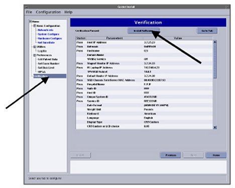
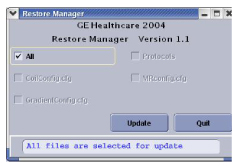
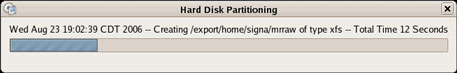
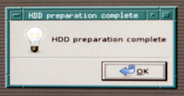
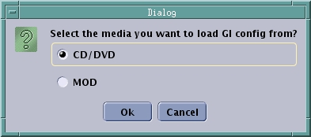
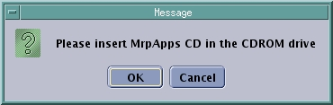
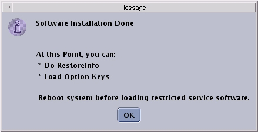
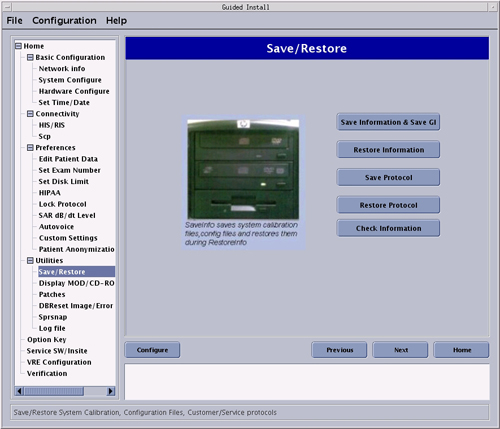

Operating Documentation
Direction 5440001-3, Rev# 6
Signa HDxt Service Methods
Module Version 5.0, Version Date 8/5/10
Operating Documentation |
| Required Persons | Preliminary Reqs | Procedure | Finalization |
|---|---|---|---|
| 1 | Not Applicable | 2 hours | Not Applicable |
This document provides instructions for setting up system software.
No general safety information.
| Condition | Reference | Effectivity |
|---|---|---|
All media must be removed during applications load, disk partitioning, and application software load. This includes additional DVDs, MODs, and USB devices (e.g., Service Keys). Failure to remove can cause software load failure. | - | - |
Insert Applications disk.
For HP9300 PC, insert Applications CD into the Host CD drive in the GOC. Do not use the CD drive on the SCSI tower.
For HP8400 PC, insert CD into top DVD drive on computer.
The following confirmation window opens.
Illustration 1: Confirmation Window

Click [Run Command].
A message box opens warning to turn off power to the DASM if installed. See Illustration below.
Illustration 2: Turn Off Power to DASM
Continue with the software load. The system is now partitioning the hard drives. See illustrations below. No action is required.
Illustration 3: Disk Partitioning

Illustration 4: : Disk Partitioning Screen for HDxt

A window opens indicating that the system will automatically reboot after two minutes.
The Locale Selection window opens prompting you to select the proper locale. Select the language, and click [OK]. See illustration below.
| NOTE: | If the Locale Selection window does not open, verify that no other media are in the drives. |
Illustration 5: Locale Selection

The Guided Install page opens.
Another window opens indicating improvements made from the previous software version. Click [OK].
| NOTE: | The last install GI configuration can only be installed if it was previously saved using the [Save Information & Save GI]. If you did not save the GI configuration or are performing a load for the first time, click [Cancel] to continue manually with the installation. |
Insert the SaveInfo MOD or CD/DVD if a GI configuration has been saved. Click [OK] to reinstall your last GI installation's configuration values.
| NOTE: | If the SaveInfo is on a CD/DVD, use the Host DVD-RW drive to reinstall the last GI configuration. |
| NOTE: | Wait until the DVD or MOD drive stops flashing to ensure the mount process is completed successfully. |
A message box indicates ‘Restoring the Guided Install GUI configuration’. A Select media message box appears. See illustration below.
Illustration 6: Install Configuration Screen

Select the media for the Guided Install, either MOD or CD/DVD. (The normal SaveInfo files are not restored at this point in the software load. They will be restored later.) Click each tab to check each section to verify that the correct values are restored.
If any parameters do not match the expected criteria, the left column will be red. If everything is acceptable, all values will be black. If the value is changed, it will be noted in blue. See illustration below.
Illustration 7: Guided Install – Configuration Screen

| NOTE: | Observe the following:
|
Confirm Video Card and LCD Monitor Selection
Go to System Configure under Basic Configuration.
Verify that the correct Video Card and Display Type (LCD Monitor) for your system are selected.
| NOTE: | There are various options for Video Card model depending
on the CPU. See the table below.
|
To determine the Video Card model, open a command window and login as root.
Type the command: cat /proc/driver/nvidia/cards/*
If the correct Video Card and LCD Monitor model are selected, then skip to Step 20.
In the Video Card box, select the correct video card model using the drop-down menu. In the Display Type box, select the correct LCD monitor model using the drop-down menu.
Proceed to the Verification tab on the left menu (see illustration below). Once in the verifications tab look for any pass or fail status, the [Install Software] button will not be active if there are any failures. Failed entries will be due to missing entries, or entries not in the correct format.
Go to the tab with the error and correct it, and then click [Install] to re-open the Verification tab.
If all entries pass verification, click [Install Software] again to begin the MR Apps load (see Illustration below). A message window prompts you to verify Time and Zone. Click [Confirm] to continue or [Abort] to return to the Time/Date. The verification window opens.
The Guided Install window opens indicating “Software Installation in progress.” The MR Apps load takes up to 12 minutes, depending on the machine being loaded.
Illustration 8: Guided Install - Verification

| NOTE: | If upgrading from LX do not change hardware configuration until after you have successfully converted your LX software options to HDx. The option conversion occurs during first restore INFO while loading software. |
Once the MR Apps load is completed the following confirmation window opens. Click [OK].
Illustration 9: Guided Install – SW Done Screen

There may be a message window prompting: “Do you want to run media/cdrom/autorun?” Click [NO] or [Ignore]. Do not click [Yes].
The GUI will change from the Install phase.
Important: you must remove the Apps CD from PC.
If a SaveInfo info MOD or CD/DVD is not available, go to each tab in the Install GUI and fill in or update all system information manually. A help button is available on each tab, which will open a pop up box with information on the required data and its format for that page.
| NOTE: | If doing a LX to HDx upgrade you must restore info at this time or your options will not be converted to HDx. |
To restore info, follow these steps:
Select [Save/Restore], then [Restore Information].
The Save/Restore window prompts you to restore all files or selected files. See Illustration below. Select [Restore Information], then select the proper media, either MOD or CD/DVD. Click [Restore all files automatically].
Illustration 10: Save/Restore Window

| NOTE: | If restoration fails, the MOD or CD/DVD will automatically eject the media. Exit the installation and allow the system to reboot. Once the system has restarted, go to Guided Install and attempt to RestoreInfo again. |
The RestoreINFO in Progress window will scroll filenames as they are being restored
When the RestoreINFO is finished a window opens prompting you to run the update utility. See Illustration below.
Illustration 11: Guided Install - Update Utility Message

Click [OK] . The Restore Manager menu opens. See Illustration below.
Illustration 12: Guided Install – Restore Utility

Select the All box so that all items are restored. Click [Update]. When update is finished click [Quit] and then [yes].
In the confirmation window, click [OK]. If the update is successful, click [Quit].
Illustration 13: Log File

Click [OK].
The success of the update is dependant on recognition of coil names. If no discrepancies are found continue to Step 28.i. If any coils are not recognized during the update, an error message opens. See illustration below.
Illustration 14: Coil Config Upgrade Status Message with Unknown Coils Found

| NOTE: | Observe the following:
|
Reboot the system by entering reboot in a C-shell.
Log into system as root, username is root, password is operator.
When prompted, click [Yes] to start Guided Install.
Insert the MR Applications DVD into the DVD drive of the Host computer.
For HP9300 PC, insert Applications CD into the Host CD drive in the GOC. Do not use the CD drive on the SCSI tower.
For HP8400 PC, insert CD into top DVD drive on computer.
For HP Z400 PC, insert CD into sole DVD drive on computer.
After inserting the MR Applications DVD, an alert box displays, indicating that the MR Applications Software Installation is in progress. If you do not see this alert, right-click on the desktop and choose Install MRApps from the menu to begin installation.
Illustration 15: MR Applications Software Installation in Progress

The system begins partitioning the hard drives. A progress window displays.
Illustration 16: Progress Window

TheHDD Preparation Complete message appears, click [OK]. Guided Install will install and launch.
Illustration 17: HDD Preparation Complete Pop-Up

When the Locale Selection window displays, select the proper locale and language, then click [OK].
Illustration 18: Select Location

The Guided Install screen displays. When the Message screen shown below displays, indicating the improvements made from the previous system version, click [OK] to continue.
Illustration 19: Guided Install Upgrade Screen

Remove the MRApps DVD from the drive.
When the Guided Install Configuration Media Dialog window displays, select the type of media you will use to restore the Guided Install Configuration.
Illustration 20: Install Configuration Media Window

Insert the Save Info DVD or MOD. Proceed with the Guided Install Load. (See Step 8 through Step 17.)
| ||||
| The last installed GUI configuration can only be installed if it was previously saved using Save GI Configuration. | ||||
Verify that the correct values are restored by checking each tab in the next step. Click [OK] to reinstall the last GUI installation configuration values.
The SaveInfo files are not restored at this point in the software load, but will be restored later.
If the GUI configuration was not saved, or the load is being performed for the first time, click [Cancel] to continue manually with the installation.
Select Basic Configuration tab shown below. Verify that all values under this tab are configured properly, including Time/Date.
If failures are noted, click on the failure, then click [Go to Tab].
If any parameter does not match the expected criteria, the values in the left column will be red. If everything is acceptable, all values remain black. A changed value is indicated in blue.
Illustration 21: Guided Install - Configuration Screen

If the Guided Install configuration was successfully restored from the DVD, it is not necessary to change any of the parameters.
Check the parameters on the Verification tab and confirm there are no failures. If there are failures, make the necessary changes.
Make sure all required configuration tabs are filled out (not in any specific order) before continuing. The Verification tab lists any formatting errors as well as current settings.
| ||||
| If loading software for the first time on a Host PC, the initial
boot-up will fail. Manually enter the Term Server information on the
Network Info screen shown in Illustration 21. Example format: 20:2D:90:22:44. Use colons between two characters; letters are case sensitive. | ||||
Go to System Configure under Basic Configuration.
Verify that the correct Video Card and Display Type (LCD Monitor) for your system are selected.
| NOTE: | There are various options for Video Card model depending
on the CPU. See the table below.
|
To determine the video card model, open a command window and login as root.
Type the command: cat /proc/driver/nvidia/cards/*.
If the correct video card and LCD monitor are selected, then skip to Step 17.
In the Video Card box, select the correct video card model using the drop-down menu. In the Display Type box, select the correct LCD monitor model using the drop-down menu.
Proceed to the Verification tab (shown below).
Look for any items with a Fail status. Go to the tab with the error and correct it.
Click [Install] to open the Verification tab again.
| NOTE: | Failed entries are due to missing or incorrectly formatted entries. The [Install Software] button is inactive if there are failures. |
Illustration 22: Guided Install - Verification

If all entries pass verification at this point, click [Install Software] to begin the MR Applications load. If the time and time zone are correct, click [Confirm] to proceed.
Illustration 23: Confirming Local Time

A pop-up message will display (shown below). Remove the SaveInfo disc from the DVD drive and insert the MRApps DVD.
Illustration 24: Insert MRApps CD

| NOTE: | A Software Installation in Progress message will display. The MR Applications load will take 5-10 minutes, depending on the host PC. |
Once the MR Applications load is complete, a confirmation message displays. Click [OK] to close the window.
Illustration 25: Guided Install - Software Installation Done

The GUI returns to the Guided Install window. Under the Utilities tab in the left navigation, select Save/Restore to open the Save/Restore screen.
Illustration 26: Save/Restore Screen

Remove the MRApps DVD from the drive. Insert the SaveInfo disc.
If the DVD with the saved configurations is not available, go to each tab in the Install GUI and complete all system information manually. A [Help] button that provides information of the required data and its format is available on each tab.
If the DVD with saved configurations is available, click [Restore Information], and select the proper medium from the dialog box. (See Illustration 20.)
When the Restore Info dialog box displays, click [Restore all files automatically], then click [Continue].
Illustration 27: Restore Option Window

| NOTE: | If restoration fails, the DVD automatically ejects the disc. Exit the Guided Install and allow the system to reboot. When the system restarts, return to the Guided Install and attempt to Restore Info again. |
A RestoreInfo in Progress window scrolls file names as they are restored.
When the restoration is completed, an Update Utility message displays.
Illustration 28: Guided Install - Update Utility Message

Click [OK] to open the Restore Manager dialog window shown below.
Illustration 29: Guided Install - Restore Utility
Select All to restore all items, and click [Update]. When the update is finished, click [Quit.]
Click [Yes] when the Quit Tool message displays.
Illustration 30: Quitting Restore Manager

The message shown below confirms that a log file was created. Click [OK] to finish.
Illustration 31: Log File

The MR Applications software load is now complete.
Reboot the system by right-clicking on the desktop.
Log in to the system as root. (Password is operator)
Click [Yes] to start Guided Install.
Remove the SaveInfo disc.
Load VRE software by doing the following:
Go into Guided Install and Select “Configure VRE”. (Shown below.)
Illustration 32: Configuring VREs

Verify that the VRE Blades are properly installed and all hardware connections are in place including Ethernet connections.
| NOTE: | Either black 5127452 ICNs, silver 5127452-3 ICNs, silver 5337894-3 ICNs, or silver 5337894-4 ICNs will be installed. A combination of the hardware types will not work on the system and should not be present. |
Click on [Configure VRE Blades].
Select the proper number of ICNs of 1, 2 or 4.
| NOTE: | The system needs to be configured for 1, 2 or 4 ICNs.
|
This procedure will take between 15-20 minutes to complete depending on the number of ICNs blades in the system.
Load VRE software by doing the following:
Go into Guided Install and Select “VRE Configuration”. (Shown below.)
Illustration 33: Configuring VREs
Verify that the VRE Blades are properly installed and all hardware connections are in place including Ethernet connections.
| NOTE: | Either black 5127452 ICNs, silver 5127452-3 ICNs, silver 5337894-3 ICNs, or silver 5337894-4 ICNs will be installed. A combination of the hardware types will not work on the system and should not be present. |
Click on [Configure VRE Blades].
Select the proper number of ICNs of 1, 2 or 4.
| NOTE: | The system needs to be configured for 1, 2 or 4 ICNs.
|
Insert the VRE OS DVD into the host computer.
This procedure will take between 15-30 minutes to complete depending on the number of ICNs blades in the system.
If this is the first or initial software load, perform the Term Server Reset Procedure by executing the following steps:
Remove power connector from Term Server.
Press and hold the small square button, labeled 'reset' next to power jack.
Connect power to term server, while continuing to hold in reset button.
Continue to hold reset button for 20 seconds.
| NOTE: | If communication problems between Linux PC and Term Server are perceived, you can ping the Term Server. |
Open Cshell
type cd /etc<enter>
type more hosts<enter>
Ping the ts1 address by typing ping X.X.X.7<enter>
You should see proper communication. The X.X.X. is your TPS Subnet address.
| NOTE: | The Term Server might need to be reset several times in order to establish communication with the Linux PC. |
To stop the test type ^z
| NOTE: | The “save to MOD” process does not create a complete SaveInfo disk. It only creates a copy of the information already entered in the GUI tabs for later use to update the GUI tabs during a new install (SaveInfo uses the Save/Restore tab.) The <Save GI Configuration to MOD> and SaveInfo can be saved on the same MOD. A separate partition is built for each. |
| ||||
| If the system will not properly boot on the first attempt, the Term Server may need to be reset. Perform the Term Server reset procedure in Step 1. | ||||
Exit the Guided Install screen by selecting File, then Quit.
| NOTE: | For installing the software using the e-licensing , refer to 2397845 Signa Software Option Install with eLicense. |
| NOTE: | It is necessary to shut down the software before attempting to load the Restricted Service or Advanced Service CDs. These should not be loaded with Applications software running. |
Reboot the system by selecting [Desktop] on top left corner of monitor, then [Logout] then [restart the computer] then [OK]
Log into the system as root, password is operator and load Restricted or Advanced Software if applicable.
If applicable, reconnect the DASM.
Click [yes] to start the Guided Install GUI.
Remove the APPS CD and insert the Service Software CD and click the Service SW/InSite option, located near the bottom of the Guided Install menu. Then select the Load Restricted Software option. The system will respond with a window as shown below. Read the proprietary statement and continue by sequentially clicking the “1,2,3” buttons and then click [OK].
Insert your normal SaveInfo MOD/CD/DVD or a new MOD/CD/DVD into the drive if not already in the drive.
At the top left of the Install GUI, select [File] then [Save GI Configuration to MOD]. This will save the information that has been entered in all the edit fields in the GUI.
Remove restricted CD from the system.
| NOTE: | The Service Methods CD can be loaded onto the software platform. The load will take approximately 12 minutes to complete. |
Insert the Service Methods CD into the CD-ROM drive in the PC. Click on [Install Service Documentation]. (Shown below.)
Illustration 34: Loading Service Documents To The Scanner

A window as shown below will be displayed – click as appropriate.
Illustration 35: CD Load Question

After the installation of the CD contents, remove the CD from the system by going to the Service Desktop – home – bottom left “Unmount CD”.
Right Click on the mouse, and select “Logout”. You can now boot applications by selecting username of sdc and password of adw2.0.
Finally, as a part of Software Setup, load the Operator Manual DVD in the local language.
No finalization steps.